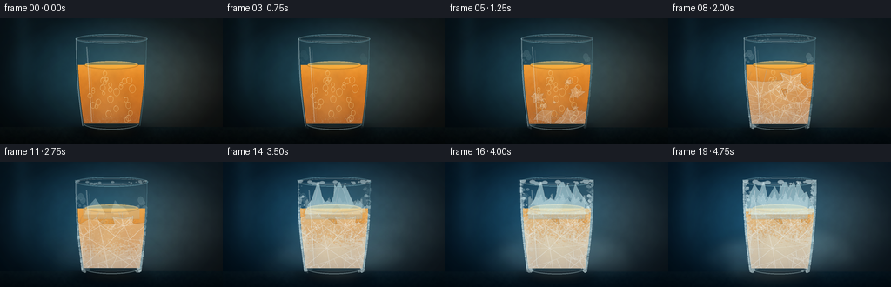
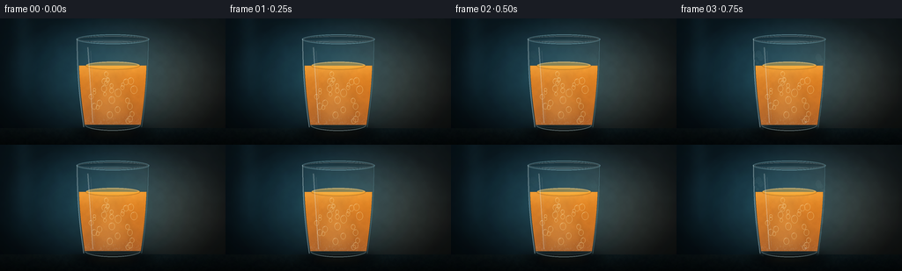
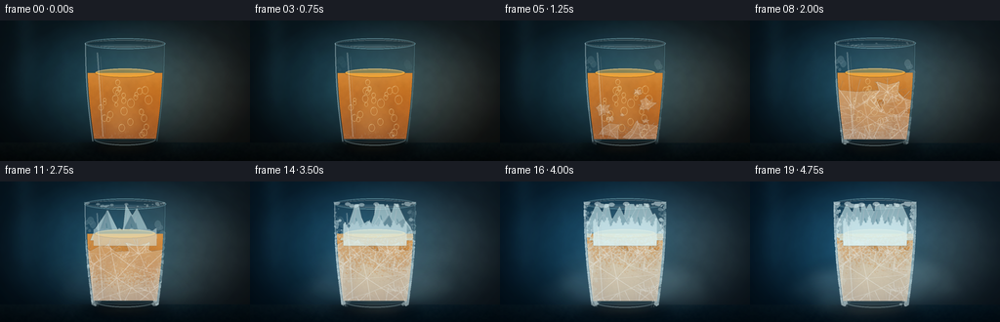
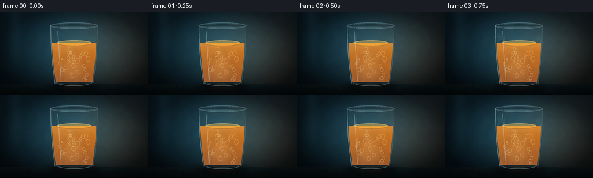

CODING AGENTS AS PIXEL WORLD MODELS
traex/DeepSeek-V4.1-Flash · phygen_092
点击播放 · 原生 RGB 像素
逐轮保存的候选
回放视频、检查图与代码变化。
每份候选均可单独播放。实际图片检查记录在下方工具轨迹中。
候选 01播放与检查图
点击播放 · 原生 RGB 像素


展开代码变化
--- 上一保存版本
+++ 本次保存版本
@@ -0,0 +1,688 @@
+"""Procedural timelapse of a glass of juice freezing.
+
+The scene is rendered at 4x resolution and downsampled to the requested
+256x144 RGB frames. All motion and texture are deterministic.
+"""
+
+from __future__ import annotations
+
+import argparse
+import math
+import random
+import shutil
+from pathlib import Path
+
+import numpy as np
+from PIL import Image, ImageDraw, ImageFilter
+
+import artifact_io
+
+
+ROOT = Path(__file__).resolve().parent
+WIDTH, HEIGHT = 256, 144
+FRAMES, FPS = 20, 4.0
+SCALE = 4
+W, H = WIDTH * SCALE, HEIGHT * SCALE
+
+CX = W // 2
+GLASS_TOP = 87
+GLASS_BOTTOM = 500
+JUICE_TOP = 215
+JUICE_BOTTOM = 484
+TABLE_Y = 500
+
+
+def clamp01(value):
+ return np.clip(value, 0.0, 1.0)
+
+
+def smoothstep(edge0, edge1, value):
+ t = clamp01((value - edge0) / max(edge1 - edge0, 1e-6))
+ return t * t * (3.0 - 2.0 * t)
+
+
+def ease(value):
+ value = min(max(value, 0.0), 1.0)
+ return value * value * (3.0 - 2.0 * value)
+
+
+def rgba(color, alpha=255):
+ return (int(color[0]), int(color[1]), int(color[2]), int(alpha))
+
+
+def half_width(y, top=GLASS_TOP, bottom=GLASS_BOTTOM, top_half=166, bottom_half=135):
+ t = np.clip((np.asarray(y, dtype=np.float32) - top) / (bottom - top), 0.0, 1.0)
+ return top_half + (bottom_half - top_half) * t + 8.0 * np.sin(np.pi * t)
+
+
+def make_noise(width, height, scale, seed, octaves=4):
+ """Smooth fractal value noise without external libraries."""
+ rng = np.random.default_rng(seed)
+ field = np.zeros((height, width), dtype=np.float32)
+ weight_sum = 0.0
+ for octave in range(octaves):
+ divisor = max(2, int(scale / (2**octave)))
+ gw = max(3, width // divisor + 2)
+ gh = max(3, height // divisor + 2)
+ grid = rng.random((gh, gw), dtype=np.float32)
+ layer = Image.fromarray(np.uint8(grid * 255.0), "L").resize(
+ (width, height), Image.Resampling.BICUBIC
+ )
+ weight = 0.58**octave
+ field += np.asarray(layer, dtype=np.float32) / 255.0 * weight
+ weight_sum += weight
+ field /= weight_sum
+ field -= field.min()
+ field /= max(float(field.max()), 1e-6)
+ return field
+
+
+def radial_field(width, height, cx, cy, rx, ry):
+ yy, xx = np.mgrid[0:height, 0:width]
+ return np.exp(-0.5 * (((xx - cx) / rx) ** 2 + ((yy - cy) / ry) ** 2))
+
+
+def mask_from_draw(draw_fn, blur=0):
+ image = Image.new("L", (W, H), 0)
+ draw_fn(ImageDraw.Draw(image))
+ if blur:
+ image = image.filter(ImageFilter.GaussianBlur(blur))
+ return image
+
+
+def glass_outer_mask():
+ def draw(d):
+ ys = np.arange(GLASS_TOP, GLASS_BOTTOM + 1)
+ left = [(CX - float(half_width(y)), int(y)) for y in ys]
+ right = [(CX + float(half_width(y)), int(y)) for y in ys[::-1]]
+ d.polygon(left + right, fill=255)
+ d.ellipse(
+ (CX - 135, GLASS_BOTTOM - 24, CX + 135, GLASS_BOTTOM + 18),
+ fill=255,
+ )
+
+ return mask_from_draw(draw)
+
+
+def glass_inner_mask():
+ def draw(d):
+ ys = np.arange(GLASS_TOP + 9, GLASS_BOTTOM - 9)
+ left = [(CX - float(half_width(y)) + 9, int(y)) for y in ys]
+ right = [(CX + float(half_width(y)) - 9, int(y)) for y in ys[::-1]]
+ d.polygon(left + right, fill=255)
+ d.ellipse(
+ (CX - 128, GLASS_BOTTOM - 31, CX + 128, GLASS_BOTTOM - 1),
+ fill=255,
+ )
+
+ return mask_from_draw(draw)
+
+
+def juice_mask():
+ def draw(d):
+ ys = np.arange(JUICE_TOP, JUICE_BOTTOM + 1)
+ left = [(CX - float(half_width(y)) + 10, int(y)) for y in ys]
+ right = [(CX + float(half_width(y)) - 10, int(y)) for y in ys[::-1]]
+ d.polygon(left + right, fill=255)
+ d.ellipse(
+ (CX - 126, JUICE_BOTTOM - 30, CX + 126, JUICE_BOTTOM - 2),
+ fill=255,
+ )
+
+ return mask_from_draw(draw)
+
+
+OUTER_MASK = glass_outer_mask()
+INNER_MASK = glass_inner_mask()
+JUICE_MASK = juice_mask()
+OUTER = np.asarray(OUTER_MASK, dtype=np.float32) / 255.0
+INNER = np.asarray(INNER_MASK, dtype=np.float32) / 255.0
+JUICE = np.asarray(JUICE_MASK, dtype=np.float32) / 255.0
+
+
+def make_background():
+ yy, xx = np.mgrid[0:H, 0:W].astype(np.float32)
+ top = np.array([14.0, 33.0, 45.0], dtype=np.float32)
+ bottom = np.array([4.0, 10.0, 15.0], dtype=np.float32)
+ t = (yy / H)[..., None]
+ arr = top * (1.0 - t) + bottom * t
+
+ # Cool backlight and a restrained warm practical light.
+ cool = radial_field(W, H, 500, 255, 300, 220)[..., None]
+ arr += cool * np.array([16.0, 42.0, 48.0], dtype=np.float32)
+ warm = radial_field(W, H, 835, 280, 250, 250)[..., None]
+ arr += warm * np.array([42.0, 23.0, 8.0], dtype=np.float32)
+
+ # Soft wall texture and a dark, slightly reflective table.
+ grain = make_noise(W, H, 34, 902, 4)
+ arr *= (0.94 + grain[..., None] * 0.10)
+ table = yy >= TABLE_Y
+ table_t = np.clip((yy - TABLE_Y) / (H - TABLE_Y), 0.0, 1.0)
+ table_color = (
+ np.array([18.0, 31.0, 34.0], dtype=np.float32) * (1.0 - table_t[..., None])
+ + np.array([5.0, 11.0, 13.0], dtype=np.float32) * table_t[..., None]
+ )
+ arr = np.where(table[..., None], table_color, arr)
+ table_grain = make_noise(W, H, 12, 1209, 3)
+ arr += table[..., None] * (table_grain[..., None] - 0.45) * np.array(
+ [9.0, 10.0, 8.0], dtype=np.float32
+ )
+
+ # Long window reflection on the wall.
+ stripe = np.exp(-0.5 * ((xx - 103) / 32.0) ** 2)
+ stripe *= np.clip(1.0 - yy / 470.0, 0.0, 1.0)
+ arr += stripe[..., None] * np.array([11.0, 22.0, 25.0], dtype=np.float32)
+
+ # Gentle edge vignette.
+ vignette = 1.0 - 0.43 * (
+ np.clip(np.abs(xx - W / 2) / (W / 2), 0.0, 1.0) ** 2
+ + np.clip(np.abs(yy - H / 2) / (H / 2), 0.0, 1.0) ** 2
+ )
+ arr *= np.clip(vignette, 0.52, 1.0)[..., None]
+ return Image.fromarray(np.uint8(np.clip(arr, 0, 255)), "RGB")
+
+
+BACKGROUND = make_background()
+BG_ARRAY = np.asarray(BACKGROUND, dtype=np.float32)
+BG_BLUR = BACKGROUND.filter(ImageFilter.GaussianBlur(11))
+
+JUICE_NOISE = make_noise(W, H, 20, 404, 5)
+CRYSTAL_NOISE = make_noise(W, H, 7, 711, 4)
+FROST_NOISE = make_noise(W, H, 5, 1704, 5)
+VEIN_NOISE = make_noise(W, H, 13, 1901, 4)
+
+YY, XX = np.mgrid[0:H, 0:W]
+Y_NORM = np.clip((YY - JUICE_TOP) / (JUICE_BOTTOM - JUICE_TOP), 0.0, 1.0)
+EDGE_DIST = np.minimum(
+ np.abs(XX - (CX - half_width(YY))), np.abs(XX - (CX + half_width(YY)))
+)
+EDGE_GLOW = np.exp(-EDGE_DIST / 13.0)
+
+
+def tint_background(progress):
+ cold = smoothstep(0.08, 0.98, progress)
+ arr = BG_ARRAY.copy()
+ arr *= np.array(
+ [1.0 - 0.09 * cold, 1.0 - 0.01 * cold, 1.0 + 0.08 * cold],
+ dtype=np.float32,
+ )
+ cool_glow = radial_field(W, H, CX, 260, 350, 270)[..., None]
+ arr += cool_glow * np.array(
+ [3.0 + 2.0 * cold, 8.0 + 11.0 * cold, 10.0 + 16.0 * cold],
+ dtype=np.float32,
+ )
+ return Image.fromarray(np.uint8(np.clip(arr, 0, 255)), "RGB")
+
+
+def composite(base, layer):
+ return Image.alpha_composite(base.convert("RGBA"), layer).convert("RGB")
+
+
+def draw_shadow(base, progress):
+ cold = smoothstep(0.1, 0.95, progress)
+ shadow = Image.new("RGBA", (W, H), (0, 0, 0, 0))
+ d = ImageDraw.Draw(shadow)
+ d.ellipse((CX - 184, TABLE_Y - 9, CX + 184, TABLE_Y + 55), fill=(0, 3, 5, 175))
+ shadow = shadow.filter(ImageFilter.GaussianBlur(22))
+ base = composite(base, shadow)
+
+ caustic = Image.new("RGBA", (W, H), (0, 0, 0, 0))
+ d = ImageDraw.Draw(caustic)
+ color = (
+ int(126 + 35 * cold),
+ int(61 + 33 * cold),
+ int(16 + 30 * cold),
+ 42,
+ )
+ d.ellipse((CX - 132, TABLE_Y + 5, CX + 128, TABLE_Y + 39), fill=color)
+ d.ellipse((CX - 76, TABLE_Y + 12, CX + 84, TABLE_Y + 32), fill=(205, 145, 74, 26))
+ caustic = caustic.filter(ImageFilter.GaussianBlur(17))
+ return composite(base, caustic)
+
+
+def draw_glass_body(base):
+ body = Image.new("RGBA", (W, H), (0, 0, 0, 0))
+ arr = np.zeros((H, W, 4), dtype=np.uint8)
+ arr[..., 0] = 133
+ arr[..., 1] = 194
+ arr[..., 2] = 211
+ arr[..., 3] = np.uint8(INNER * 17)
+ body = Image.alpha_composite(body, Image.fromarray(arr, "RGBA"))
+ base = composite(base, body)
+
+ rim = Image.new("RGBA", (W, H), (0, 0, 0, 0))
+ d = ImageDraw.Draw(rim)
+ d.ellipse((CX - 166, GLASS_TOP - 15, CX + 166, GLASS_TOP + 30), outline=(145, 204, 218, 150), width=5)
+ d.ellipse((CX - 158, GLASS_TOP - 7, CX + 158, GLASS_TOP + 22), outline=(228, 247, 249, 130), width=3)
+ rim = rim.filter(ImageFilter.GaussianBlur(1.1))
+ return composite(base, rim)
+
+
+def juice_rgb(progress):
+ cold = smoothstep(0.12, 0.94, progress)
+ texture = (JUICE_NOISE - 0.5) * 18.0
+ surface_glow = np.exp(-((YY - JUICE_TOP) / 45.0) ** 2)
+ lower_shadow = smoothstep(0.25, 1.0, Y_NORM)
+ center_light = np.exp(-0.5 * ((XX - (CX - 30)) / 93.0) ** 2)
+
+ r = 235 - 33 * Y_NORM + 15 * surface_glow - 9 * lower_shadow
+ g = 136 - 34 * Y_NORM + 20 * surface_glow + 9 * center_light
+ b = 27 + 9 * Y_NORM + 18 * surface_glow + 14 * center_light
+ r += texture * 0.75
+ g += texture * 0.55
+ b += texture * 0.25
+
+ # Ice pulls the juice toward translucent honey and icy amber.
+ ice = cold * (0.22 + 0.38 * (1.0 - Y_NORM) ** 0.8)
+ r = r * (1.0 - ice) + 236 * ice
+ g = g * (1.0 - ice) + 187 * ice
+ b = b * (1.0 - ice) + 112 * ice
+ return np.dstack([r, g, b])
+
+
+def draw_juice(base, progress):
+ rgb = juice_rgb(progress)
+ alpha = np.uint8(JUICE * 247)
+ layer = Image.fromarray(np.dstack([np.uint8(np.clip(rgb, 0, 255)), alpha]), "RGBA")
+ base = composite(base, layer)
+
+ # Backlit lower body and a narrow warm core.
+ glow = Image.new("RGBA", (W, H), (0, 0, 0, 0))
+ d = ImageDraw.Draw(glow)
+ d.ellipse((CX - 96, JUICE_TOP + 95, CX + 75, JUICE_BOTTOM + 8), fill=(255, 190, 84, 34))
+ d.ellipse((CX - 39, JUICE_TOP + 24, CX + 19, JUICE_BOTTOM - 12), fill=(255, 213, 126, 29))
+ glow = glow.filter(ImageFilter.GaussianBlur(24))
+ base = composite(base, glow)
+
+ # Liquid surface ellipse with a bright meniscus.
+ surface = Image.new("RGBA", (W, H), (0, 0, 0, 0))
+ d = ImageDraw.Draw(surface)
+ d.ellipse((CX - 123, JUICE_TOP - 19, CX + 123, JUICE_TOP + 17), fill=(246, 167, 52, 225))
+ d.ellipse((CX - 113, JUICE_TOP - 14, CX + 111, JUICE_TOP + 9), fill=(255, 194, 74, 112))
+ d.arc((CX - 124, JUICE_TOP - 19, CX + 124, JUICE_TOP + 18), 192, 348, fill=(255, 228, 160, 190), width=4)
+ surface = surface.filter(ImageFilter.GaussianBlur(1.2))
+ surface_arr = np.asarray(surface, dtype=np.float32)
+ surface_arr[..., 3] *= np.asarray(INNER_MASK, dtype=np.float32) / 255.0
+ base = composite(base, Image.fromarray(np.uint8(surface_arr), "RGBA"))
+
+ # A few rising bubbles, which disappear as the liquid locks into ice.
+ bubble_alpha = int(112 * (1.0 - smoothstep(0.35, 0.74, progress)))
+ if bubble_alpha:
+ bubbles = Image.new("RGBA", (W, H), (0, 0, 0, 0))
+ d = ImageDraw.Draw(bubbles)
+ rng = random.Random(61)
+ for index in range(29):
+ bx = CX + rng.uniform(-105, 100)
+ by = rng.uniform(JUICE_TOP + 36, JUICE_BOTTOM - 16)
+ by -= 3.0 * progress * (1 + index % 3)
+ radius = rng.uniform(1.4, 3.8) * SCALE
+ d.ellipse(
+ (bx - radius, by - radius * 1.25, bx + radius, by + radius * 1.25),
+ outline=(255, 229, 161, bubble_alpha),
+ width=max(1, int(SCALE * 0.55)),
+ )
+ d.arc(
+ (bx - radius * 0.8, by - radius, bx + radius * 0.2, by),
+ 190,
+ 310,
+ fill=(255, 250, 218, min(220, bubble_alpha + 70)),
+ width=1,
+ )
+ arr = np.asarray(bubbles, dtype=np.float32)
+ arr[..., 3] *= JUICE
+ base = composite(base, Image.fromarray(np.uint8(arr), "RGBA"))
+ return base
+
+
+def crystal_clusters(progress):
+ rng = random.Random(871)
+ clusters = []
+ for index in range(38):
+ x = CX + rng.uniform(-108, 108)
+ if index < 24:
+ y = rng.uniform(JUICE_BOTTOM - 120, JUICE_BOTTOM - 10)
+ else:
+ y = rng.uniform(JUICE_TOP + 70, JUICE_BOTTOM - 50)
+ onset = 0.12 + 0.49 * rng.random()
+ size = rng.uniform(14, 42) * SCALE
+ rays = rng.randint(5, 9)
+ rotation = rng.uniform(0, math.tau)
+ clusters.append((x, y, onset, size, rays, rotation, rng.random()))
+ return clusters
+
+
+CRYSTALS = crystal_clusters(0.0)
+
+
+def draw_ice_crystals(base, progress):
+ crystals = Image.new("RGBA", (W, H), (0, 0, 0, 0))
+ d = ImageDraw.Draw(crystals)
+ for x, y, onset, size, rays, rotation, variation in CRYSTALS:
+ growth = ease((progress - onset) / 0.27)
+ if growth <= 0.01:
+ continue
+ radius = size * growth
+ points = []
+ for ray in range(rays):
+ angle = rotation + ray * math.tau / rays
+ wobble = 0.74 + 0.26 * math.sin(ray * 2.7 + variation * 8.0)
+ points.append(
+ (
+ x + math.cos(angle) * radius * wobble,
+ y + math.sin(angle) * radius * wobble * 0.75,
+ )
+ )
+ fill = (225, 242, 244, int(38 + 32 * growth))
+ outline = (244, 253, 253, int(95 + 72 * growth))
+ d.polygon(points, fill=fill, outline=outline, width=max(1, SCALE // 2))
+
+ # Fine dendritic arms add structure without hiding the amber liquid.
+ for ray in range(rays):
+ angle = rotation + ray * math.tau / rays + 0.07 * math.sin(variation * 11 + ray)
+ end = (
+ x + math.cos(angle) * radius * 1.04,
+ y + math.sin(angle) * radius * 0.78,
+ )
+ d.line((x, y, end[0], end[1]), fill=(250, 255, 255, int(80 + 80 * growth)), width=max(1, SCALE // 2))
+ branch_base = 0.46 + 0.12 * (ray % 3)
+ bx = x + (end[0] - x) * branch_base
+ by = y + (end[1] - y) * branch_base
+ for side in (-1, 1):
+ ba = angle + side * (0.66 + 0.09 * (ray % 2))
+ d.line(
+ (bx, by, bx + math.cos(ba) * radius * 0.31, by + math.sin(ba) * radius * 0.24),
+ fill=(241, 251, 252, int(55 + 75 * growth)),
+ width=1,
+ )
+
+ crystals = crystals.filter(ImageFilter.GaussianBlur(0.7))
+ arr = np.asarray(crystals, dtype=np.float32)
+ arr[..., 3] *= JUICE
+ return composite(base, Image.fromarray(np.uint8(arr), "RGBA"))
+
+
+def draw_frozen_body(base, progress):
+ cold = smoothstep(0.15, 0.9, progress)
+ bottom_frost = np.exp(-((JUICE_BOTTOM - YY) / 130.0) ** 1.35)
+ side_frost = EDGE_GLOW * 0.75
+ field = (
+ FROST_NOISE * 0.62
+ + bottom_frost * 0.62
+ + side_frost * 0.28
+ + Y_NORM * 0.12
+ )
+ threshold = 0.98 - cold * 0.61
+ frost = smoothstep(threshold, threshold + 0.22, field)
+ frost *= JUICE * (0.18 + 0.55 * cold)
+ frost_rgb = np.dstack(
+ [
+ 210 + 25 * FROST_NOISE,
+ 234 + 15 * FROST_NOISE,
+ 237 + 12 * FROST_NOISE,
+ ]
+ )
+ layer = Image.fromarray(
+ np.dstack([np.uint8(np.clip(frost_rgb, 0, 255)), np.uint8(frost * 150)]),
+ "RGBA",
+ )
+ return composite(base, layer)
+
+
+def draw_surface_ice(base, progress):
+ freeze = smoothstep(0.47, 0.93, progress)
+ if freeze <= 0.0:
+ return base
+ cap = Image.new("RGBA", (W, H), (0, 0, 0, 0))
+ d = ImageDraw.Draw(cap)
+
+ rng = random.Random(319)
+ count = 17
+ for index in range(count):
+ onset = 0.48 + 0.43 * (index / max(1, count - 1))
+ growth = ease((progress - onset) / 0.18)
+ if growth <= 0:
+ continue
+ x = CX + rng.uniform(-118, 118)
+ base_y = JUICE_TOP + rng.uniform(-8, 8)
+ width = rng.uniform(15, 30) * SCALE * (0.45 + 0.55 * growth)
+ height = rng.uniform(10, 34) * SCALE * growth
+ lean = rng.uniform(-7, 7) * SCALE * growth
+ poly = [
+ (x - width * 0.55, base_y + 5 * SCALE),
+ (x - width * 0.38, base_y - height * 0.28),
+ (x + lean, base_y - height),
+ (x + width * 0.36, base_y - height * 0.31),
+ (x + width * 0.56, base_y + 5 * SCALE),
+ ]
+ d.polygon(
+ poly,
+ fill=(205, 238, 241, int(150 * growth)),
+ outline=(247, 255, 255, int(220 * growth)),
+ )
+ d.line(
+ (x - width * 0.25, base_y + 2 * SCALE, x + lean * 0.5, base_y - height * 0.7),
+ fill=(255, 255, 255, int(160 * growth)),
+ width=max(1, SCALE // 2),
+ )
+
+ # An irregular, advancing freeze front across the liquid surface.
+ ys = np.arange(JUICE_TOP - 24, JUICE_TOP + 20)
+ for x in range(CX - 127, CX + 128, 4):
+ local = 0.5 + 0.5 * math.sin(x * 0.19) * math.sin(x * 0.071 + 1.2)
+ reach = freeze * (1.0 + 0.38 * local)
+ if reach <= 0.06:
+ continue
+ top = JUICE_TOP - 2 * SCALE - int(12 * SCALE * reach * (0.45 + 0.55 * local))
+ alpha = int(85 + 110 * freeze)
+ d.line(
+ (x, top, x, JUICE_TOP + 12 * SCALE),
+ fill=(222, 246, 247, alpha),
+ width=3,
+ )
+
+ cap = cap.filter(ImageFilter.GaussianBlur(0.8))
+ cap_arr = np.asarray(cap, dtype=np.float32)
+ opening = np.asarray(INNER_MASK, dtype=np.float32) / 255.0
+ cap_arr[..., 3] *= opening
+ return composite(base, Image.fromarray(np.uint8(cap_arr), "RGBA"))
+
+
+def draw_condensation_and_frost(base, progress):
+ condensation = smoothstep(0.03, 0.42, progress)
+ frost_amount = smoothstep(0.43, 0.96, progress)
+ droplets = Image.new("RGBA", (W, H), (0, 0, 0, 0))
+ d = ImageDraw.Draw(droplets)
+ rng = random.Random(5501)
+ for index in range(92):
+ y = rng.uniform(GLASS_TOP + 65, GLASS_BOTTOM - 17)
+ side = -1 if rng.random() < 0.5 else 1
+ edge = float(half_width(y))
+ x = CX + side * (edge - rng.uniform(5, 35))
+ radius = rng.uniform(1.1, 3.3) * SCALE
+ drip = rng.random() < 0.13
+ alpha = int(85 * condensation * (1.0 - 0.45 * frost_amount))
+ if drip:
+ length = radius * rng.uniform(2.6, 5.2)
+ d.rounded_rectangle(
+ (x - radius * 0.72, y - radius, x + radius * 0.72, y + length),
+ radius=radius,
+ fill=(207, 234, 237, alpha // 2),
+ outline=(244, 255, 255, alpha),
+ width=1,
+ )
+ else:
+ d.ellipse(
+ (x - radius, y - radius * 1.2, x + radius, y + radius * 1.2),
+ fill=(197, 227, 230, alpha // 2),
+ outline=(246, 255, 255, alpha),
+ width=1,
+ )
+ droplets = droplets.filter(ImageFilter.GaussianBlur(0.55))
+ arr = np.asarray(droplets, dtype=np.float32)
+ arr[..., 3] *= OUTER * (1.0 - 0.82 * JUICE)
+ base = composite(base, Image.fromarray(np.uint8(arr), "RGBA"))
+
+ frost = Image.new("RGBA", (W, H), (0, 0, 0, 0))
+ d = ImageDraw.Draw(frost)
+ rng = random.Random(7103)
+ for index in range(610):
+ y = rng.uniform(GLASS_TOP + 12, GLASS_BOTTOM + 3)
+ vertical = (y - GLASS_TOP) / (GLASS_BOTTOM - GLASS_TOP)
+ edge_weight = 0.22 + 0.78 * vertical
+ side = -1 if rng.random() < 0.5 else 1
+ edge = float(half_width(y))
+ x = CX + side * (edge - abs(rng.gauss(0, 11)))
+ onset = 0.34 + 0.55 * (1.0 - edge_weight) + rng.uniform(-0.08, 0.14)
+ strength = ease((progress - onset) / 0.16)
+ if strength <= 0:
+ continue
+ radius = rng.uniform(0.6, 2.2) * SCALE
+ alpha = int(strength * rng.uniform(90, 190))
+ color = (220, 242, 244, alpha)
+ d.ellipse((x - radius, y - radius * 0.8, x + radius, y + radius * 0.8), fill=color)
+ if rng.random() < 0.22:
+ d.line(
+ (x, y, x + rng.uniform(-8, 8), y + rng.uniform(-8, 8)),
+ fill=(246, 255, 255, alpha),
+ width=1,
+ )
+ frost = frost.filter(ImageFilter.GaussianBlur(0.45))
+ arr = np.asarray(frost, dtype=np.float32)
+ arr[..., 3] *= OUTER * (1.0 - 0.72 * JUICE)
+ return composite(base, Image.fromarray(np.uint8(arr), "RGBA"))
+
+
+def draw_glass_highlights(base, progress):
+ cold = smoothstep(0.1, 0.95, progress)
+ layer = Image.new("RGBA", (W, H), (0, 0, 0, 0))
+ d = ImageDraw.Draw(layer)
+
+ # Strong left edge and softer right edge.
+ left_points = [(CX - float(half_width(y)) + 4, y) for y in range(GLASS_TOP + 5, GLASS_BOTTOM - 4)]
+ right_points = [(CX + float(half_width(y)) - 5, y) for y in range(GLASS_TOP + 5, GLASS_BOTTOM - 4)]
+ d.line(left_points, fill=(216, 242, 247, 112), width=5)
+ d.line(right_points, fill=(125, 184, 198, 82), width=4)
+
+ # Interior reflections: narrow vertical glints and the curved base.
+ d.line((CX - 114, GLASS_TOP + 44, CX - 91, JUICE_BOTTOM - 8), fill=(244, 255, 255, 68), width=6)
+ d.line((CX - 101, GLASS_TOP + 61, CX - 83, JUICE_BOTTOM - 21), fill=(255, 255, 255, 48), width=2)
+ d.arc((CX - 129, GLASS_BOTTOM - 45, CX + 128, GLASS_BOTTOM + 12), 10, 170, fill=(209, 239, 242, 98), width=5)
+ d.arc((CX - 123, GLASS_BOTTOM - 35, CX + 119, GLASS_BOTTOM + 1), 14, 166, fill=(247, 255, 255, 58), width=2)
+ d.ellipse((CX - 102, GLASS_TOP + 11, CX + 80, GLASS_TOP + 22), fill=(217, 243, 246, 23))
+
+ # Icy rim accumulates late in the timelapse.
+ if cold > 0.3:
+ rim_ice = Image.new("RGBA", (W, H), (0, 0, 0, 0))
+ rd = ImageDraw.Draw(rim_ice)
+ rng = random.Random(997)
+ for index in range(42):
+ angle = rng.uniform(0, math.tau)
+ x = CX + math.cos(angle) * rng.uniform(148, 166)
+ y = GLASS_TOP + math.sin(angle) * rng.uniform(8, 22)
+ r = rng.uniform(1.5, 4.0) * SCALE * cold
+ rd.ellipse((x - r, y - r * 0.6, x + r, y + r * 0.6), fill=(230, 248, 249, int(150 * cold)))
+ rim_ice = rim_ice.filter(ImageFilter.GaussianBlur(0.8))
+ layer = Image.alpha_composite(layer, rim_ice)
+
+ layer = layer.filter(ImageFilter.GaussianBlur(0.65))
+ arr = np.asarray(layer, dtype=np.float32)
+ arr[..., 3] *= OUTER
+ return composite(base, Image.fromarray(np.uint8(arr), "RGBA"))
+
+
+def draw_mist(base, progress, foreground=False):
+ cold = smoothstep(0.32, 0.98, progress)
+ if cold <= 0.02:
+ return base
+ mist = Image.new("RGBA", (W, H), (0, 0, 0, 0))
+ d = ImageDraw.Draw(mist)
+ rng = random.Random(3109 if not foreground else 3209)
+ count = 8 if not foreground else 5
+ for index in range(count):
+ phase = rng.random()
+ drift = (progress + phase) % 1.0
+ x = CX + rng.uniform(-185, 185)
+ y = GLASS_BOTTOM - 15 - drift * rng.uniform(80, 190)
+ rx = rng.uniform(30, 76) * SCALE
+ ry = rng.uniform(10, 24) * SCALE
+ alpha = int(cold * (14 + 22 * (1.0 - abs(drift - 0.45) * 1.5)))
+ if foreground:
+ alpha = int(alpha * 0.6)
+ d.ellipse((x - rx, y - ry, x + rx, y + ry), fill=(195, 229, 232, max(0, alpha)))
+ mist = mist.filter(ImageFilter.GaussianBlur(28))
+ if foreground:
+ mist = mist.filter(ImageFilter.GaussianBlur(12))
+ return composite(base, mist)
+
+
+def post_process(image, progress):
+ cold = smoothstep(0.06, 0.98, progress)
+ arr = np.asarray(image, dtype=np.float32)
+ # Cold grade in the shadows, preserving the orange center.
+ luminance = arr.mean(axis=2, keepdims=True) / 255.0
+ shadow_weight = np.clip(1.0 - luminance * 1.65, 0.0, 1.0)
+ arr += shadow_weight * np.array([-2.0, 3.0, 7.0], dtype=np.float32) * cold
+ arr[..., 2] += 2.5 * cold
+ arr[..., 0] -= 1.5 * cold
+
+ yy, xx = np.mgrid[0:H, 0:W]
+ vignette = 1.0 - 0.16 * (
+ (np.clip(np.abs(xx - W / 2) / (W / 2), 0, 1) ** 2.4)
+ + (np.clip(np.abs(yy - H / 2) / (H / 2), 0, 1) ** 2.4)
+ )
+ arr *= np.clip(vignette, 0.75, 1.0)[..., None]
+ return Image.fromarray(np.uint8(np.clip(arr, 0, 255)), "RGB")
+
+
+def render_frame(index):
+ progress = index / (FRAMES - 1)
+ image = tint_background(progress)
+ image = draw_shadow(image, progress)
+ image = draw_mist(image, progress, foreground=False)
+ image = draw_glass_body(image)
+ image = draw_juice(image, progress)
+ image = draw_frozen_body(image, progress)
+ image = draw_ice_crystals(image, progress)
+ image = draw_surface_ice(image, progress)
+ image = draw_condensation_and_frost(image, progress)
+ image = draw_glass_highlights(image, progress)
+ image = draw_mist(image, progress, foreground=True)
+ image = post_process(image, progress)
+
+ # Slight push-in makes the five-second timelapse feel alive while retaining
+ # a stable composition for judging the physical change.
+ zoom = 1.0 + 0.023 * ease(progress)
+ crop_w = int(W / zoom)
+ crop_h = int(H / zoom)
+ x0 = (W - crop_w) // 2
+ y0 = int((H - crop_h) * 0.52)
+ image = image.crop((x0, y0, x0 + crop_w, y0 + crop_h))
+ return image.resize((WIDTH, HEIGHT), Image.Resampling.LANCZOS)
+
+
+def render_all():
+ return [np.asarray(render_frame(index), dtype=np.uint8) for index in range(FRAMES)]
+
+
+def save_candidate(frames, name):
+ folder = ROOT / "candidates" / name
+ folder.mkdir(parents=True, exist_ok=True)
+ shutil.copy2(ROOT / "task_spec.json", folder / "task_spec.json")
+ shutil.copy2(ROOT / "prompt.txt", folder / "prompt.txt")
+ artifact_io.save(frames, folder)
+
+
+def main():
+ parser = argparse.ArgumentParser()
+ parser.add_argument("--candidate", help="Also save a named candidate snapshot")
+ args = parser.parse_args()
+
+ frames = render_all()
+ if args.candidate:
+ save_candidate(frames, args.candidate)
+ artifact_io.save(frames, ROOT)
+ print(f"wrote {len(frames)} frames at {WIDTH}x{HEIGHT}, {FPS:g} fps")
+
+
+if __name__ == "__main__":
+ main()
候选 02播放与检查图
点击播放 · 原生 RGB 像素


展开代码变化
--- 上一保存版本
+++ 本次保存版本
@@ -65,7 +65,7 @@
gw = max(3, width // divisor + 2)
gh = max(3, height // divisor + 2)
grid = rng.random((gh, gw), dtype=np.float32)
- layer = Image.fromarray(np.uint8(grid * 255.0), "L").resize(
+ layer = Image.fromarray(np.uint8(grid * 255.0)).resize(
(width, height), Image.Resampling.BICUBIC
)
weight = 0.58**octave
@@ -179,7 +179,7 @@
+ np.clip(np.abs(yy - H / 2) / (H / 2), 0.0, 1.0) ** 2
)
arr *= np.clip(vignette, 0.52, 1.0)[..., None]
- return Image.fromarray(np.uint8(np.clip(arr, 0, 255)), "RGB")
+ return Image.fromarray(np.uint8(np.clip(arr, 0, 255)))
BACKGROUND = make_background()
@@ -211,7 +211,7 @@
[3.0 + 2.0 * cold, 8.0 + 11.0 * cold, 10.0 + 16.0 * cold],
dtype=np.float32,
)
- return Image.fromarray(np.uint8(np.clip(arr, 0, 255)), "RGB")
+ return Image.fromarray(np.uint8(np.clip(arr, 0, 255)))
def composite(base, layer):
@@ -247,7 +247,7 @@
arr[..., 1] = 194
arr[..., 2] = 211
arr[..., 3] = np.uint8(INNER * 17)
- body = Image.alpha_composite(body, Image.fromarray(arr, "RGBA"))
+ body = Image.alpha_composite(body, Image.fromarray(arr))
base = composite(base, body)
rim = Image.new("RGBA", (W, H), (0, 0, 0, 0))
@@ -265,25 +265,25 @@
lower_shadow = smoothstep(0.25, 1.0, Y_NORM)
center_light = np.exp(-0.5 * ((XX - (CX - 30)) / 93.0) ** 2)
- r = 235 - 33 * Y_NORM + 15 * surface_glow - 9 * lower_shadow
- g = 136 - 34 * Y_NORM + 20 * surface_glow + 9 * center_light
+ r = 209 - 28 * Y_NORM + 10 * surface_glow - 8 * lower_shadow
+ g = 121 - 29 * Y_NORM + 14 * surface_glow + 7 * center_light
b = 27 + 9 * Y_NORM + 18 * surface_glow + 14 * center_light
r += texture * 0.75
g += texture * 0.55
b += texture * 0.25
# Ice pulls the juice toward translucent honey and icy amber.
- ice = cold * (0.22 + 0.38 * (1.0 - Y_NORM) ** 0.8)
- r = r * (1.0 - ice) + 236 * ice
- g = g * (1.0 - ice) + 187 * ice
- b = b * (1.0 - ice) + 112 * ice
+ ice = cold * (0.18 + 0.33 * (1.0 - Y_NORM) ** 0.8)
+ r = r * (1.0 - ice) + 223 * ice
+ g = g * (1.0 - ice) + 169 * ice
+ b = b * (1.0 - ice) + 95 * ice
return np.dstack([r, g, b])
def draw_juice(base, progress):
rgb = juice_rgb(progress)
alpha = np.uint8(JUICE * 247)
- layer = Image.fromarray(np.dstack([np.uint8(np.clip(rgb, 0, 255)), alpha]), "RGBA")
+ layer = Image.fromarray(np.dstack([np.uint8(np.clip(rgb, 0, 255)), alpha]))
base = composite(base, layer)
# Backlit lower body and a narrow warm core.
@@ -303,7 +303,7 @@
surface = surface.filter(ImageFilter.GaussianBlur(1.2))
surface_arr = np.asarray(surface, dtype=np.float32)
surface_arr[..., 3] *= np.asarray(INNER_MASK, dtype=np.float32) / 255.0
- base = composite(base, Image.fromarray(np.uint8(surface_arr), "RGBA"))
+ base = composite(base, Image.fromarray(np.uint8(surface_arr)))
# A few rising bubbles, which disappear as the liquid locks into ice.
bubble_alpha = int(112 * (1.0 - smoothstep(0.35, 0.74, progress)))
@@ -330,7 +330,7 @@
)
arr = np.asarray(bubbles, dtype=np.float32)
arr[..., 3] *= JUICE
- base = composite(base, Image.fromarray(np.uint8(arr), "RGBA"))
+ base = composite(base, Image.fromarray(np.uint8(arr)))
return base
@@ -398,12 +398,12 @@
crystals = crystals.filter(ImageFilter.GaussianBlur(0.7))
arr = np.asarray(crystals, dtype=np.float32)
arr[..., 3] *= JUICE
- return composite(base, Image.fromarray(np.uint8(arr), "RGBA"))
+ return composite(base, Image.fromarray(np.uint8(arr)))
def draw_frozen_body(base, progress):
cold = smoothstep(0.15, 0.9, progress)
- bottom_frost = np.exp(-((JUICE_BOTTOM - YY) / 130.0) ** 1.35)
+ bottom_frost = np.exp(-np.maximum(JUICE_BOTTOM - YY, 0.0) / 150.0)
side_frost = EDGE_GLOW * 0.75
field = (
FROST_NOISE * 0.62
@@ -416,36 +416,35 @@
frost *= JUICE * (0.18 + 0.55 * cold)
frost_rgb = np.dstack(
[
- 210 + 25 * FROST_NOISE,
- 234 + 15 * FROST_NOISE,
- 237 + 12 * FROST_NOISE,
+ 199 + 27 * FROST_NOISE,
+ 227 + 17 * FROST_NOISE,
+ 229 + 14 * FROST_NOISE,
]
)
layer = Image.fromarray(
np.dstack([np.uint8(np.clip(frost_rgb, 0, 255)), np.uint8(frost * 150)]),
- "RGBA",
)
return composite(base, layer)
def draw_surface_ice(base, progress):
- freeze = smoothstep(0.47, 0.93, progress)
+ freeze = smoothstep(0.42, 0.90, progress)
if freeze <= 0.0:
return base
cap = Image.new("RGBA", (W, H), (0, 0, 0, 0))
d = ImageDraw.Draw(cap)
rng = random.Random(319)
- count = 17
+ count = 23
for index in range(count):
- onset = 0.48 + 0.43 * (index / max(1, count - 1))
- growth = ease((progress - onset) / 0.18)
+ onset = 0.42 + 0.48 * (index / max(1, count - 1))
+ growth = ease((progress - onset) / 0.15)
if growth <= 0:
continue
x = CX + rng.uniform(-118, 118)
base_y = JUICE_TOP + rng.uniform(-8, 8)
- width = rng.uniform(15, 30) * SCALE * (0.45 + 0.55 * growth)
- height = rng.uniform(10, 34) * SCALE * growth
+ width = rng.uniform(16, 33) * SCALE * (0.38 + 0.62 * growth)
+ height = rng.uniform(11, 38) * SCALE * growth
lean = rng.uniform(-7, 7) * SCALE * growth
poly = [
(x - width * 0.55, base_y + 5 * SCALE),
@@ -456,12 +455,17 @@
]
d.polygon(
poly,
- fill=(205, 238, 241, int(150 * growth)),
+ fill=(201, 232, 234, int(172 * growth)),
outline=(247, 255, 255, int(220 * growth)),
)
d.line(
(x - width * 0.25, base_y + 2 * SCALE, x + lean * 0.5, base_y - height * 0.7),
fill=(255, 255, 255, int(160 * growth)),
+ width=max(1, SCALE // 2),
+ )
+ d.line(
+ (x + width * 0.18, base_y + 4 * SCALE, x + lean * 0.25, base_y - height * 0.45),
+ fill=(139, 190, 196, int(100 * growth)),
width=max(1, SCALE // 2),
)
@@ -473,18 +477,18 @@
if reach <= 0.06:
continue
top = JUICE_TOP - 2 * SCALE - int(12 * SCALE * reach * (0.45 + 0.55 * local))
- alpha = int(85 + 110 * freeze)
+ alpha = int(92 + 132 * freeze)
d.line(
(x, top, x, JUICE_TOP + 12 * SCALE),
fill=(222, 246, 247, alpha),
- width=3,
+ width=4,
)
cap = cap.filter(ImageFilter.GaussianBlur(0.8))
cap_arr = np.asarray(cap, dtype=np.float32)
opening = np.asarray(INNER_MASK, dtype=np.float32) / 255.0
cap_arr[..., 3] *= opening
- return composite(base, Image.fromarray(np.uint8(cap_arr), "RGBA"))
+ return composite(base, Image.fromarray(np.uint8(cap_arr)))
def draw_condensation_and_frost(base, progress):
@@ -520,7 +524,7 @@
droplets = droplets.filter(ImageFilter.GaussianBlur(0.55))
arr = np.asarray(droplets, dtype=np.float32)
arr[..., 3] *= OUTER * (1.0 - 0.82 * JUICE)
- base = composite(base, Image.fromarray(np.uint8(arr), "RGBA"))
+ base = composite(base, Image.fromarray(np.uint8(arr)))
frost = Image.new("RGBA", (W, H), (0, 0, 0, 0))
d = ImageDraw.Draw(frost)
@@ -546,10 +550,29 @@
fill=(246, 255, 255, alpha),
width=1,
)
+ # Fine frost spikes follow the advancing freeze rather than merely tinting
+ # the glass. These stay mostly near the edges and lower half.
+ rng = random.Random(7229)
+ for index in range(250):
+ y = rng.uniform(GLASS_TOP + 45, GLASS_BOTTOM - 3)
+ vertical = (y - GLASS_TOP) / (GLASS_BOTTOM - GLASS_TOP)
+ onset = 0.37 + 0.50 * (1.0 - vertical) + rng.uniform(-0.05, 0.12)
+ strength = ease((progress - onset) / 0.16)
+ if strength <= 0:
+ continue
+ side = -1 if rng.random() < 0.5 else 1
+ x = CX + side * (float(half_width(y)) - rng.uniform(2, 24))
+ length = rng.uniform(3, 14) * SCALE * strength
+ direction = rng.choice([-1, 1])
+ d.line(
+ (x, y, x + direction * length * 0.28, y + length),
+ fill=(236, 251, 252, int(145 * strength)),
+ width=1,
+ )
frost = frost.filter(ImageFilter.GaussianBlur(0.45))
arr = np.asarray(frost, dtype=np.float32)
arr[..., 3] *= OUTER * (1.0 - 0.72 * JUICE)
- return composite(base, Image.fromarray(np.uint8(arr), "RGBA"))
+ return composite(base, Image.fromarray(np.uint8(arr)))
def draw_glass_highlights(base, progress):
@@ -587,7 +610,7 @@
layer = layer.filter(ImageFilter.GaussianBlur(0.65))
arr = np.asarray(layer, dtype=np.float32)
arr[..., 3] *= OUTER
- return composite(base, Image.fromarray(np.uint8(arr), "RGBA"))
+ return composite(base, Image.fromarray(np.uint8(arr)))
def draw_mist(base, progress, foreground=False):
@@ -631,7 +654,7 @@
+ (np.clip(np.abs(yy - H / 2) / (H / 2), 0, 1) ** 2.4)
)
arr *= np.clip(vignette, 0.75, 1.0)[..., None]
- return Image.fromarray(np.uint8(np.clip(arr, 0, 255)), "RGB")
+ return Image.fromarray(np.uint8(np.clip(arr, 0, 255)))
def render_frame(index):
可观测工具轨迹
实际执行的命令与返回图片。
命令 1exit 0
/bin/bash -c "pwd && rg --files -g '"'!**/.git/**'"' | sed -n '1,200p'"
命令 2exit 0
/bin/bash -c "sed -n '1,240p' prompt.txt"
命令 3exit 0
/bin/bash -c "sed -n '1,280p' GENERATION_RULES.md"
命令 4exit 0
/bin/bash -c 'cat task_spec.json'
命令 5exit 0
/bin/bash -c "find . -maxdepth 3 -type f -not -path './.git/*' -printf '%p %s bytes\\n' | sort | sed -n '1,240p'"
命令 6exit 0
/bin/bash -c "sed -n '1,260p' artifact_io.py"
命令 7exit 0
/bin/bash -c "sed -n '1,260p' player_template.html"
命令 8exit 0
/bin/bash -c "python - <<'PY'
import numpy, PIL, sys
print('python', sys.version.split()[0])
print('numpy', numpy.__version__)
print('PIL', PIL.__version__)
PY"命令 9exit 0
/bin/bash -c 'command -v ffmpeg || true; command -v ffprobe || true'
命令 10exit 0
/bin/bash -c 'python generate.py --candidate v1'
命令 11exit 0
/bin/bash -c "python - <<'PY' from PIL import Image for name in ['inspection.png','transition_check.png']: im=Image.open(name); print(name, im.size, im.mode) PY"
命令 12exit 0
/bin/bash -c "python - <<'PY'
from PIL import Image, ImageOps
import numpy as np
chars=' .:-=+*#%@'
for idx in [0,5,10,15,19]:
im=Image.open(f'frames/{idx:02d}.png').convert('L').resize((64,36))
a=np.asarray(im,dtype=float)
print(f'\\nFRAME {idx}')
for row in a:
print(''.join(chars[min(len(chars)-1,int(v/256*len(chars)))] for v in row))
PY"命令 13exit 0
/bin/bash -c "python - <<'PY'
from PIL import Image
import numpy as np
for idx in [0,4,8,12,16,19]:
a=np.asarray(Image.open(f'frames/{idx:02d}.png').convert('RGB'),dtype=np.float32)
# central liquid region and overall stats
roi=a[50:123,90:166]
print(idx, 'mean', np.round(roi.mean((0,1)),1), 'minmax', roi.min(),roi.max(), 'sat', round(float((roi.max(2)-roi.min(2)).mean()),1))
PY"命令 14exit 0
/bin/bash -c 'ls -la; du -sh frames candidates index.html pixels.npz inspection.png'
命令 15exit 0
/bin/bash -c "python - <<'PY'
from PIL import Image
# nearest-neighbor enlargements of a representative strip for close inspection
ims=[]
for i in [0,4,8,12,16,19]:
im=Image.open(f'frames/{i:02d}.png')
im=im.crop((45,35,211,137)).resize((332,204),Image.Resampling.NEAREST)
ims.append(im)
out=Image.new('RGB',(332*3,204*2),(20,20,20))
for j,im in enumerate(ims): out.paste(im,((j%3)*332,(j//3)*204))
out.save('.tmp/detail_v1.png')
print(out.size)
PY"命令 16exit 0
/bin/bash -c "python - <<'PY'
import numpy as np
from PIL import Image
# Quantify frame-to-frame change and ensure no frame is duplicated/blank.
f=np.stack([np.asarray(Image.open(f'frames/{i:02d}.png'),dtype=np.float32) for i in range(20)])
print('shape', f.shape, 'range', f.min(), f.max())
print('unique colors frame 0/19', len(np.unique(f[0].reshape(-1,3),axis=0)), len(np.unique(f[19].reshape(-1,3),axis=0)))
d=np.abs(np.diff(f,axis=0)).mean((1,2,3))
print('mean deltas', np.round(d,2).tolist())
print('duplicate pairs', np.where(d<0.01)[0].tolist())
PY"命令 17exit 0
/bin/bash -c "python - <<'PY'
from PIL import Image
im=Image.open('inspection.png')
# Print exact image locations as a 16x12 luminance grid for a better sense of camera framing.
import numpy as np
for name,arr in [('frame0',np.asarray(Image.open('frames/00.png').convert('RGB'))),('frame19',np.asarray(Image.open('frames/19.png').convert('RGB')))]:
print(name, 'mean RGB', arr.mean((0,1)).round(1), 'p10/p90', np.percentile(arr,[10,90],axis=(0,1)).round(1).tolist())
PY"命令 18exit 0
/bin/bash -c "python - <<'PY'
from PIL import Image
import numpy as np
for i in [0,5,10,15,19]:
a=np.asarray(Image.open(f'frames/{i:02d}.png'),dtype=np.float32)
# Mean and standard deviation per broad vertical band to inspect scene balance.
for y0,y1 in [(0,30),(30,80),(80,125),(125,144)]:
b=a[y0:y1]
print(i,(y0,y1),tuple(np.round(b.mean((0,1)),1)),tuple(np.round(b.std((0,1)),1)))
print()
PY"命令 19exit 0
/bin/bash -c 'git status --short 2>/dev/null || true'
命令 20exit 0
/bin/bash -c "python - <<'PY'
from PIL import Image
import numpy as np
# detect clipping in the final frame: highlights can erase texture
for i in [0,10,19]:
a=np.asarray(Image.open(f'frames/{i:02d}.png'))
for channel in range(3):
x=a[...,channel]
print(i,channel,'>=250',round(float((x>=250).mean()*100),2),'<=5',round(float((x<=5).mean()*100),2))
PY"命令 21exit 0
/bin/bash -c "python - <<'PY'
from PIL import Image
im=Image.open('.tmp/detail_v1.png')
# Summarize edges: print RGB samples at glass boundary and background positions.
for name,im2 in [('first',Image.open('frames/00.png')),('last',Image.open('frames/19.png'))]:
print(name)
for x,y in [(128,25),(128,60),(128,80),(128,90),(128,105),(128,124),(80,80),(50,80),(190,80),(128,135)]: print((x,y),im2.getpixel((x,y)))
PY"命令 22exit 0
/bin/bash -c 'command -v chafa || true; command -v viu || true; command -v img2txt || true; command -v jp2 || true; command -v ffmpeg || true'
命令 23exit 0
/bin/bash -c "rg -n 'Image\\.fromarray\\(' generate.py"命令 24exit 0
/bin/bash -c "sed -n '410,435p' generate.py; sed -n '500,620p' generate.py"
命令 25exit 0
/bin/bash -c 'python generate.py --candidate v2'
命令 26exit 0
/bin/bash -c "python - <<'PY'
from PIL import Image
import numpy as np
chars=' .:-=+*#%@'
for idx in [0,8,12,16,19]:
im=Image.open(f'frames/{idx:02d}.png').convert('L').resize((64,36))
a=np.asarray(im,dtype=float)
print(f'\\nFRAME {idx}')
for row in a:
print(''.join(chars[min(len(chars)-1,int(v/256*len(chars)))] for v in row))
PY"命令 27exit 0
/bin/bash -c "python - <<'PY'
from PIL import Image
import numpy as np
for idx in [0,4,8,12,16,19]:
a=np.asarray(Image.open(f'frames/{idx:02d}.png'),dtype=np.float32)
roi=a[48:126,86:170]
print(idx, 'RGB', np.round(roi.mean((0,1)),1), 'sat', round(float((roi.max(2)-roi.min(2)).mean()),1), 'p90', np.round(np.percentile(roi,90,axis=(0,1)),1))
PY"命令 28exit 0
/bin/bash -c "python - <<'PY'
from PIL import Image
import numpy as np
for idx in [0,8,12,16,19]:
a=np.asarray(Image.open(f'frames/{idx:02d}.png'),dtype=np.float32)
# spatial layout: mean luminance by thirds
print('\\n',idx)
for y in range(10,140,10):
print(y, tuple(np.round(a[max(0,y-5):min(144,y+5)].mean((0,1)),0).astype(int)))
PY"命令 29exit 0
/bin/bash -c "python - <<'PY'
from PIL import Image
import numpy as np
for idx in [0,8,12,16,19]:
a=np.asarray(Image.open(f'frames/{idx:02d}.png'),dtype=np.float32)
print('\\n',idx)
# central pixels by location
for p in [(128,52),(128,60),(128,70),(128,80),(128,90),(128,100),(128,110),(128,118),(128,125),(110,70),(145,70),(110,100),(145,100)]:
print(p,tuple(a[p[1],p[0]].astype(int)),end='; ')
print()
PY"命令 30exit 0
/bin/bash -c "python -m py_compile generate.py && echo 'generate.py compiles' && test -f candidates/v1/frames/19.png && test -f candidates/v2/frames/19.png && echo 'candidate snapshots present'"
命令 31exit 0
/bin/bash -c "find frames -maxdepth 1 -type f -name '*.png' | wc -l; find candidates -maxdepth 3 -type f -name '*.png' | wc -l; du -sh frames candidates index.html pixels.npz"
命令 32exit 0
/bin/bash -c "python - <<'PY'
import json, numpy as np
from pathlib import Path
from PIL import Image
spec=json.loads(Path('task_spec.json').read_text())
z=np.load('pixels.npz')['pixels']
print('pixels.npz', z.shape, z.dtype, 'expected', (spec['height'],spec['width'],spec['frames']))
frames=np.stack([np.asarray(Image.open(f'frames/{i:02d}.png').convert('RGB')) for i in range(spec['frames'])])
print('pngs',frames.shape,frames.dtype,'range',int(frames.min()),int(frames.max()))
print('unique frames',len(np.unique(frames,axis=0)))
d=np.abs(np.diff(frames.astype(np.int16),axis=0)).mean((1,2,3))
print('delta min/max',round(float(d.min()),3),round(float(d.max()),3),'zero pairs',int((d==0).sum()))
print('player bytes',Path('index.html').stat().st_size,'ready marker', '__pixelReady' in Path('index.html').read_text())
PY"命令 33exit 0
/bin/bash -c "python - <<'PY'
from pathlib import Path
p=Path('index.html')
s=p.read_text()
# Basic structural checks for the embedded player; no browser is available here.
checks = {
'canvas': '<canvas id=\"canvas\" width=\"256\" height=\"144\">' in s,
'first payload': '\"first\":\"' in s,
'19 deltas': s.count('\"deltas\":[') == 1 and s.count('\",\"') >= 19,
'play controls': 'id=\"play\"' in s and 'id=\"seek\"' in s,
'caption': 'timelapse captures' in s,
}
print(checks)
PY"命令 34exit 0
/bin/bash -c "python - <<'PY'
from pathlib import Path
import hashlib
for i in [0,19]:
a=Path(f'frames/{i:02d}.png').read_bytes()
b=Path(f'candidates/v2/frames/{i:02d}.png').read_bytes()
print(f'frame {i:02d}', hashlib.sha256(a).hexdigest()[:16], 'candidate_match', a==b)
PY"命令 35exit 0
/bin/bash -c "ls -lh generate.py index.html pixels.npz inspection.png transition_check.png; find frames -maxdepth 1 -type f -name '*.png' | sort | tail -3"
保存候选 2 份；完成命令 35 次；可验证图片返回 0 张。原始 API 响应与完整日志保留在本地。